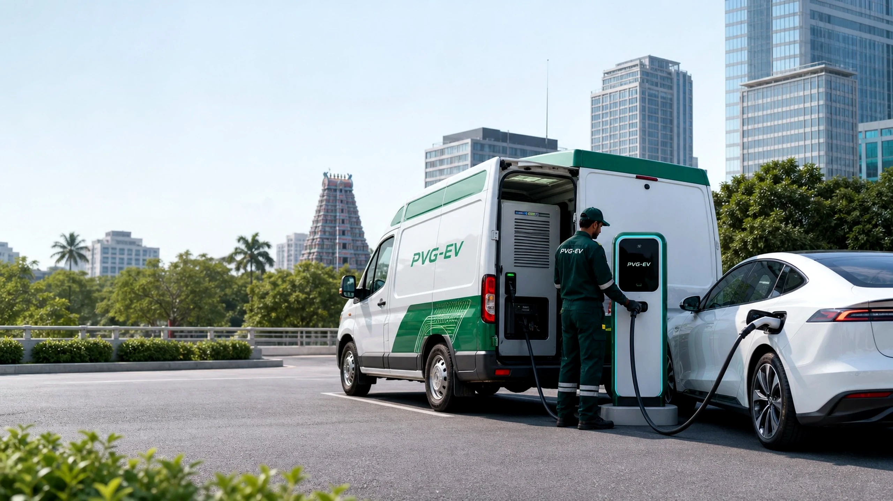
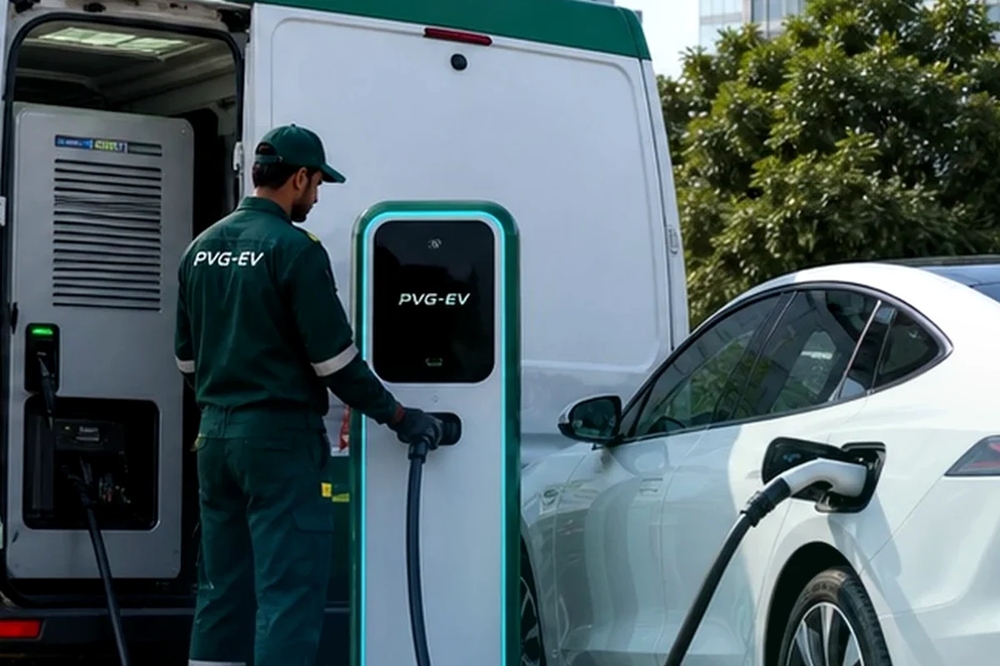
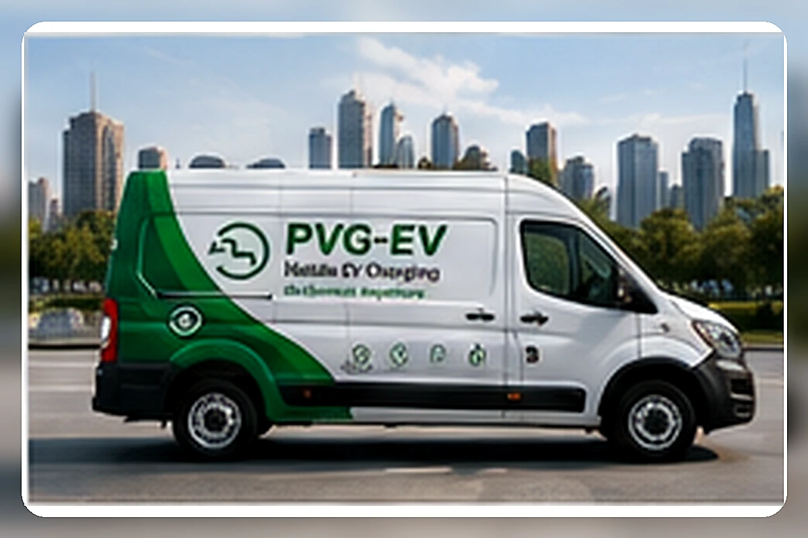
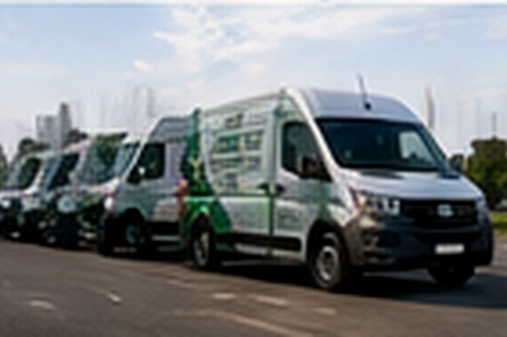
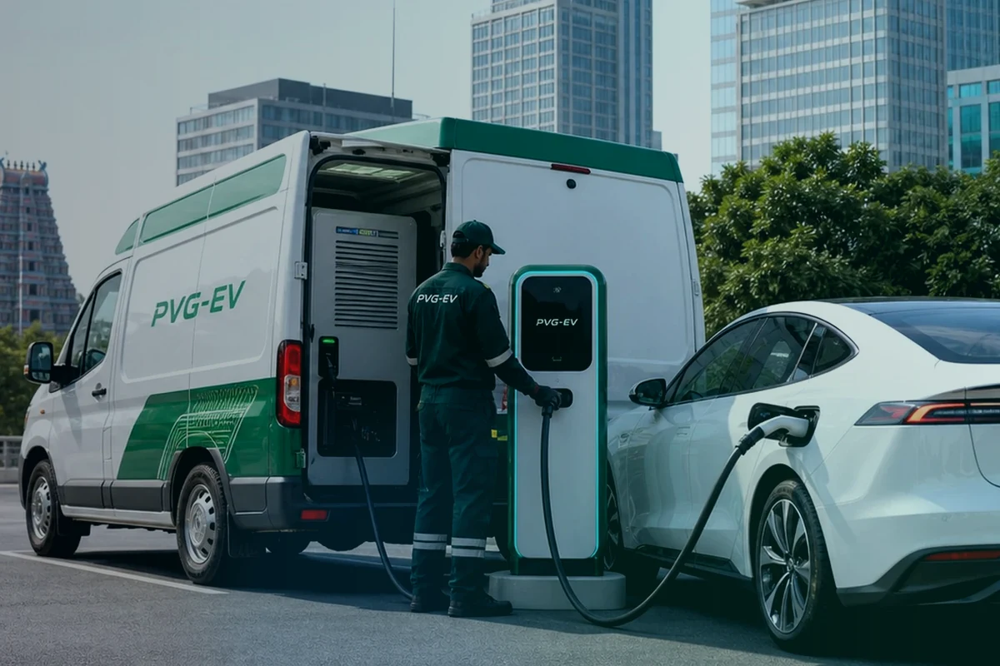
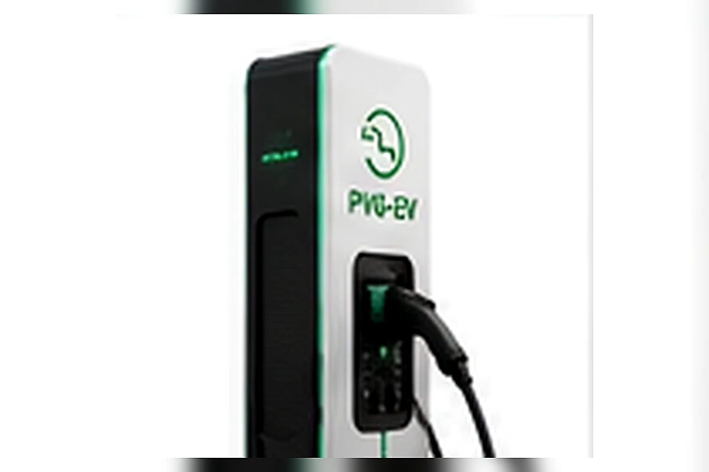
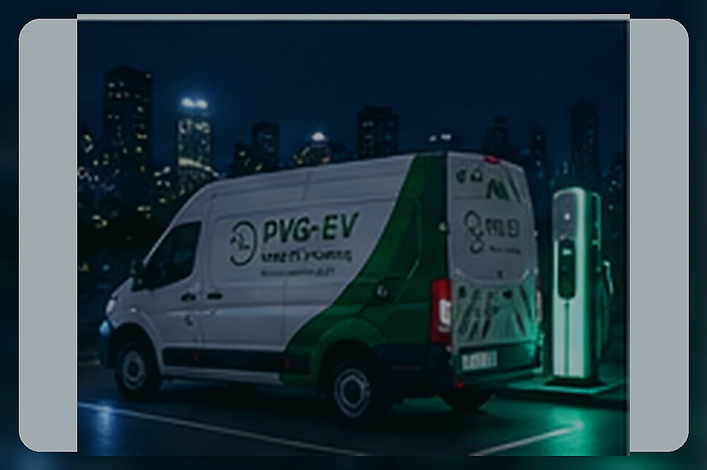
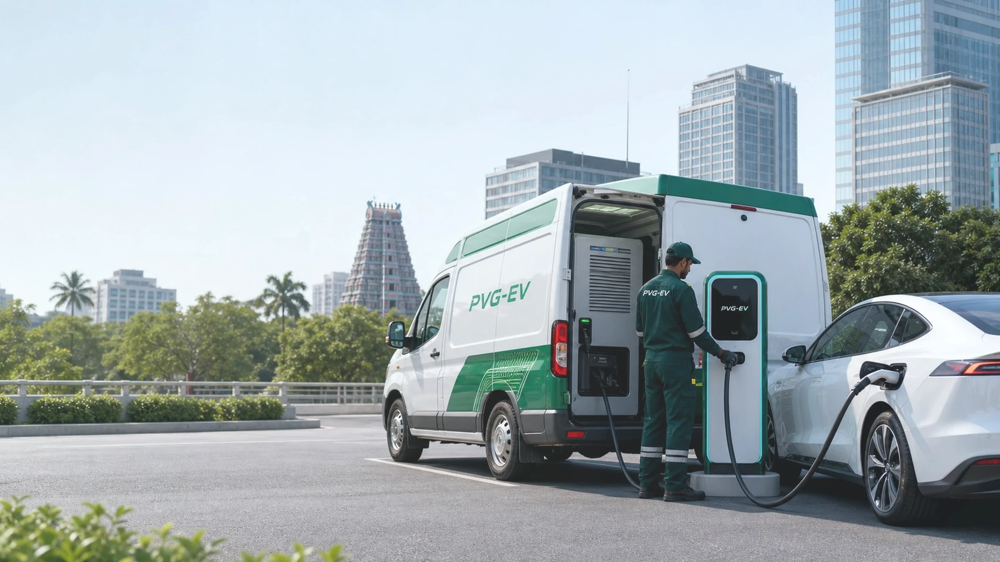

PVG-EV Insights
EV Charging Insights for Chennai, Fleets and Future Infrastructure.
Practical guides, field learnings and planning resources for mobile charging, fleet electrification, commercial deployment and Tamil Nadu pilot operations.
Practical information for fleets, businesses, apartments and pilot partners.

Featured Guide
What Is a Mobile EV Charging Station?
A practical guide to mobile EV-charging systems, how vehicle charging is delivered on demand, and how PVG-EV is preparing pilot learning for Chennai and Tamil Nadu.
Explore Insights
Find practical EV-charging knowledge.
Showing all insights
Latest Knowledge
Field notes, explainers and EV-infrastructure planning resources.
Browse crawlable PVG-EV articles for mobile charging operations, fleet planning, commercial readiness, apartment requirements and pilot development.

What Is a Mobile EV Charging Station?
A practical explanation of vehicle-mounted charging systems and how they support EV users.
Read Article
How Mobile Charging Can Support EV Fleets
Ways mobile charging can help fleets manage operating windows, routes and charging access.
Read Article
Reducing Fleet Downtime Through Flexible Charging
Why charging closer to operating bases can matter for commercial EV utilisation.
Read ArticleEV-Charging Challenges in Chennai
A factual look at access, congestion, fleet needs and early-stage infrastructure planning.
Read ArticleThe Future of Mobile EV Charging in Tamil Nadu
How pilot-led deployment can shape flexible charging across Tamil Nadu and South India.
Read ArticleApartment EV Charging: Key Considerations
Planning factors for residential communities considering EV charging access.
Read Article
Emergency Charging for Electric Vehicles
How mobile charging can support energy assistance before vehicles reach fixed chargers.
Read Article
How Businesses Can Prepare for EV Adoption
Charging access, parking, power and fleet planning considerations for organisations.
Read Article
Mobile EV Charging Versus Fixed Charging
How flexible mobile charging can complement permanent public and depot charging infrastructure.
Read Article
The PVG-EV and Setrans Collaboration
How technology development and local operating capability combine in the PVG-EV model.
Read Article
Chennai Mobile Charging Pilot Updates
What the pilot is intended to assess before wider service expansion.
Read Article
Mobile Charging for Temporary Locations and Events
Use cases for exhibitions, projects, temporary fleets and high-demand locations.
Read ArticleNo matching insights found. Try another search term or clear the selected category.
Planning Guides
Practical resources for different charging needs.

Fleet Guide
Fleet Charging Planning Guide
Route, depot and operating-window considerations for electric fleets.
View GuideCommercial Guide
Commercial Site Assessment Guide
Site-access, parking and deployment-readiness questions for businesses.
View Guide
Apartment Guide
Apartment Charging Readiness Guide
Property, parking and resident-use considerations for communities.
View Guide
Pilot Guide
Mobile Charging Pilot Checklist
Information to prepare before discussing pilot participation.
View GuideDownloadable Resources
Useful checklists and planning tools.
Fleet Charging Assessment Checklist
A compact checklist for early fleet charging-readiness review.
PDF · 1.2 KB DownloadMobile Charging Brief
Overview of PVG-EV mobile charging context and pilot readiness.
PDF · 1.2 KB DownloadChennai Pilot Interest Guide
Early-stage notes for organisations considering pilot participation.
PDF · 1.2 KB DownloadPopular Topics
Explore by EV-charging need.
Knowledge by Format
Choose the resource style that fits your planning stage.
Articles
Editorial explainers and field notes from the PVG-EV knowledge hub.
Browse ArticlesPlanning Guides
Guided pages for fleet, commercial, apartment and pilot-readiness questions.
View GuidesDownloadable Checklists
Real PDF resources available in the current PVG-EV website package.
See DownloadsFAQs
Short answers about mobile charging, pilot status and assessment inputs.
Read FAQsFrequently Asked Questions
Common questions about EV charging and PVG-EV insights.
Mobile EV charging brings charging support closer to vehicles and operating locations where fixed charging is unavailable, inconvenient or still developing.
It can be assessed for operating bases, routes, depots and locations where vehicles are already parked or operating. Deployment remains subject to pilot availability and feasibility review.
Businesses can submit requirements for offices, commercial parking, project sites and temporary locations for early review by the PVG-EV team.
Apartment associations and gated communities can submit charging requirements for site-access, parking-layout and vehicle-compatibility assessment.
PVG-EV is in pilot preparation. Service availability, launch timing and deployment commitments must be confirmed before publication or customer confirmation.
Useful inputs include location, vehicle type, charging need, preferred timing, parking access and whether the requirement is for an owner, fleet, apartment, office or commercial site.
No. Guides are planning resources. Technical values remain subject to Setrans approval, testing and deployment-readiness checks.
Yes. Organisations can use the request or contact routes to discuss pilot interest, charging requirements and possible site evaluation.
Plan a Requirement
Planning an EV-charging requirement?
Talk to PVG-EV about mobile charging, fleet assessment, commercial charging or pilot participation.